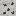
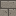

Grey, airless and a long way down from the station. The highlands are pale Anorthosite under Regolith, broken by craters with raised rims; the maria are flat plains of dark Mare Regolith over basalt, the place to build. The Moon follows the rules of Low Orbit for air and heat: suits outside, Pressure Hull rooms with an Oxygen Vent to breathe, Radiator Panels to cool, and a Ground Link to reach the network. Getting there takes a Lunar Lander docked at your station; getting back takes its Ascent Stage and eight Hydrogen Canisters. Cargo Pods can go straight to a Docking Port on the Moon: switch the Launch Control's destination (it costs one more stage). The Moon fights back: its day lasts eight Earth days, so the night is long and solar-dark (bring Radioisotope Generators and batteries); dust gets in every time an Airlock opens and clogs your racks (a Dust Filter cleans it out); solar storms hurt anyone outside, suit or not (get indoors; a Comms Satellite warns you a minute ahead); and micrometeorites punch through exposed walls (Whipple Shields, or a second wall of Sintered Regolith).
Lunar Lander
rackcraft:lunar_lander
Your ride down to the Moon, and back. Load it into a Launch Control (three stages) and it docks at a free Docking Port on your station. Go up, open the port and press Board Lander in a sealed Pressure Suit with a minute of air: it sets you down in your company's landing zone with its Ascent Stage beside you. Eight Hydrogen Canisters in the Ascent Stage take you back to the station, and the Lander docks there again for the next trip. Built on the Assembly Line from a Crew Capsule (four Steel Blocks for the legs, sixteen Hydrogen Canisters, eight Electric Motors, four Cryo Coils, eight Circuit Boards, weld, rivet) once Lunar Landing is researched.
The top half of a Lunar Lander, left standing beside you when you land. On the Moon, use it with eight Hydrogen Canisters on you: it burns them and lifts you back to your station's deck, and the Lander docks again at a free Docking Port there (or lands in your arms if every port is full). Mine it to move it. Off the Moon it's a gold-foil garden shed.
Regolith
rackcraft:regolith
The Moon's topsoil: grey dust and broken glass from four billion years of things hitting it. It covers the highlands a few blocks deep. Smelt it into Sintered Regolith, a cheap airtight hull block, or sift it for Helium-3. A Regolith Excavator digs it for you.
Mare Regolith
rackcraft:mare_regolith
The dark dust of the lunar maria, the flat 'seas' of old lava you can see from Earth. Smooth Basalt lies under it. Flat ground, which is the most useful thing about it: the maria are where you build.
Anorthosite
rackcraft:anorthosite
The pale rock of the lunar highlands and everything under the Moon's dust: old crust made of feldspar crystals. Building stone, if you came a long way for building stone.

Ilmenite Ore
rackcraft:ilmenite_ore
Black, faintly metallic ore in the Moon's rock, richest under the dark maria. Mine it with an iron pickaxe for Raw Ilmenite, which smelts into Titanium (Fortune helps, Silk Touch keeps the ore). Only found on the Moon.
Raw Ilmenite
rackcraft:raw_ilmenite
Iron titanium oxide, mined from Ilmenite Ore on the Moon. Smelt or blast it for a Titanium Ingot.
Titanium Ingot
rackcraft:titanium_ingot
Light, strong and only found on the Moon. It goes into the Titanium Pressure Helmet and Titanium Rocket Stages, and into the very top of the tree: Topological Cores, Photonic Spine Routers and the Antimatter Warhead all need it.
A Pressure Helmet rebuilt in titanium with a bigger tank: it holds 30 minutes of air instead of 10, draws Oxygen Canisters the same way, and refills just as fast in a pressurised room. Built on the Assembly Line from a Pressure Helmet (six Titanium Ingots, two Oxygen Canisters, a Circuit Board, weld) once Lunar Landing is researched.
A Rocket Stage with a titanium tank: so much lighter that it counts as two stages in a Launch Control, for the same hydrogen. A Saturn V of them is two Titanium Stages and a plain one. Built on the Assembly Line from a Rocket Stage (eight Titanium Ingots, weld, rivet) once Lunar Landing is researched.
Water ice that has sat in the dark for a couple of billion years, in the rock under the polar regions (past Z 3,400 north or south) where the sun never reaches the crater floors. Mine it for Lunar Ice; four make a block of Ice, which melts into water when you break it, so an Electrolyser on the Moon can make its own hydrogen and oxygen.
Lunar Ice
rackcraft:lunar_ice
A chunk of ancient polar ice from the Moon. Four make a block of Ice: break it and it melts into water, which is all an Electrolyser needs.

Sintered Regolith
rackcraft:sintered_regolith
Moon dust baked in a furnace into a hard, glassy tile. It is airtight, so it walls an Oxygen Vent's room like Pressure Hull, for a lot less aluminum: build your Moon base out of the Moon. Smelt Regolith or Mare Regolith to make it.
Shakes, heats and sieves lunar dust for the few parts per billion of Helium-3 the solar wind left in it: each core turns 32 Regolith into one Helium-3 Canister every 4 minutes, drawing 300 kW while it works. A multiblock processing cube, 2x2x2 or bigger, fed and emptied like the others. It only works on the Moon, and is locked until Lunar Landing is researched. Feed it from Regolith Excavators. Helium-3 is fusion fuel: keep it for the Tokamak.
Crafting
Hopper
Regolith Excavator
rackcraft:regolith_excavator
A bucket-wheel digger for the Moon's dust. Set it on open regolith and it works the 9 x 9 patch round it, under its own level, for 30 Regolith a minute, drawing 250 kW while it digs. It never runs out, but it wears: each set of Excavator Teeth lasts 1,000 Regolith, and the patch tires as it's worked, down to half the yield after a day or so of digging. Breaking it and setting it down somewhere fresh brings the yield back. Mare Regolith (the dark plains) yields a quarter more. Set it touching a Regolith Sifter cube and it feeds the cube directly, keeping only what won't fit. Slots: teeth, then eight for what it digs; hoppers, Item Pipes and Storage Links take the Regolith away, and on an Item Pipe it takes teeth from storage. Two or three keep a big Tokamak fuelled. Works only on the Moon, once Lunar Landing is researched.
Crafting
Iron pickaxe
Iron pickaxe
Excavator Teeth
rackcraft:excavator_teeth
A set of titanium bucket teeth for a Regolith Excavator. Lunar dust is ground glass, so a set lasts 1,000 Regolith. Two sets from four Titanium Ingots and a Steel Ingot.
Crafting
makes 2
Helium-3 Canister
rackcraft:helium3_canister
Helium-3, sifted out of lunar dust by a Regolith Sifter. Rare on Earth, common-ish on the Moon, and the fuel that makes fusion worth doing. Carry it home, or pack a Cargo Pod and launch it from a Launch Control on the Moon, with a Heat Shield, to a Docking Port at home.
Sintered regolith tiles on a titanium frame: what stops a Cargo Pod coming home from the Moon arriving as a meteor. Put one in a stage slot of a Launch Control on the Moon; each pod sent home burns one. Make them on the Moon from eight Sintered Regolith and a Titanium Ingot.
Crafting
Radioisotope Generator
rackcraft:radioisotope_generator
A sealed lump of plutonium that stays warm for decades, and thermocouples round it: 40 kW, day and night, no fuel, no off switch. The Moon's day lasts eight Earth days, so its night is long and solar gives nothing; a couple of these (with batteries) keep a base's air and racks going until sunrise. Works anywhere.
Crafting
Dust Filter
rackcraft:dust_filter
Moon dust is fine, sharp and gets everywhere: every time an Airlock on the Moon opens, some gets into the room behind it, and racks in a dusty room clog up and mine up to 30% slower (Liquid-Immersion Racks are sealed and don't care). A powered Dust Filter inside the room pulls it back out, a full room's worth in under two minutes, at 8 kW. Its screen shows how dusty the room is.
Crafting
White wool
White wool
White wool
Lunar Claim Beacon
rackcraft:claim_beacon
The Moon is finite and shared, and its land is what companies fight over. Place this on the Moon and it claims the 5 x 5 chunks round it for your company: inside them, no other company's players can break, place or use blocks. The first beacon to claim a chunk keeps it; a later one only takes the free chunks round it. A company can hold four beacons' worth of land; break a beacon (only you can) to let its land go and move it. Needs no power. Does nothing anywhere but the Moon.